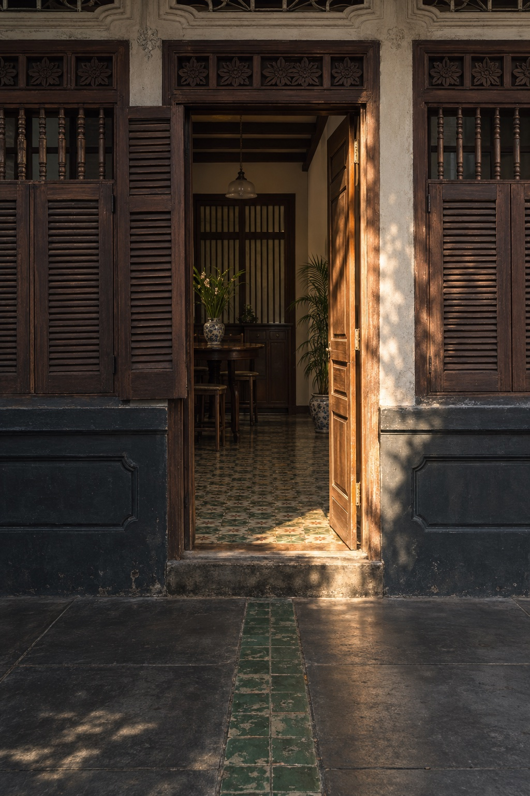

The origins 1940s
Along
Rochor Road
Goh Joo Hin traces its beginnings to a provision shop on Rochor Road.

The origins 1940s
Goh Joo Hin traces its beginnings to a provision shop on Rochor Road.
The origins 1940s
The company account identifies a provision shop. Its precise layout remains undocumented in the reviewed sources.